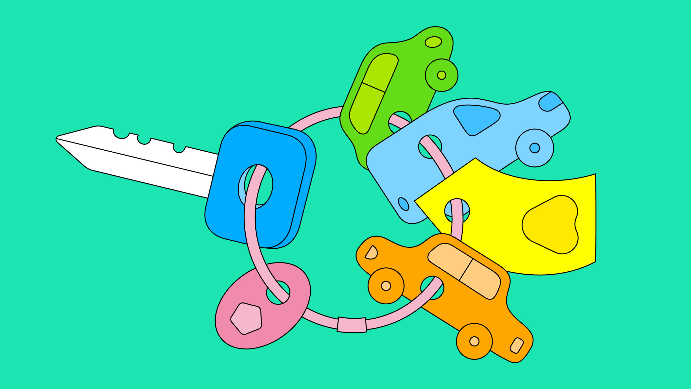
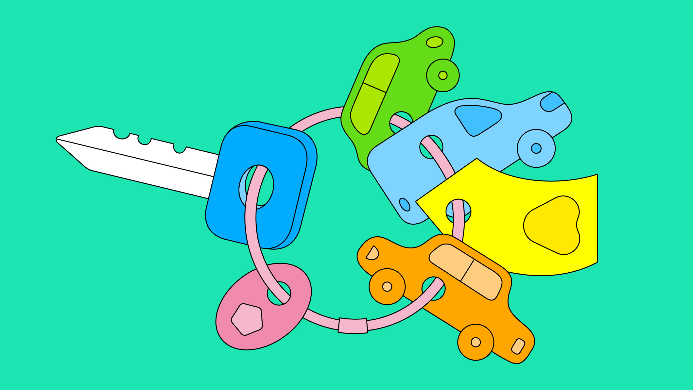

Martina Paukova
Berlin-based illustrator Martina Paukova likes to dabble in the colorful nuances of everyday moments. “My work consists of daily mundane scenes and lanky characters, often with perplexed expressions and dated hairdos, sitting behind computers or sipping coffee,” she says. “I like to explore and mold the everyday, the awkward, and the bendy.” Martina’s work has rocketed in popularity in the last couple of years, seeing her create humorous, jam-packed images in a trademark palette with Memphis-inspired patterns for an increasingly impressive list of clients
Previously, Martina studied politics in Slovakia before changing direction to study illustration at Camberwell College of Arts in London. She now spends her days on various editorial and commercial commissions, injecting personality into an image in a way that is uniquely her own. Like a modern-day MC Escher, her colorful, quirky perspectives move and change, with each element slotting together like a well-crafted puzzle.


 
